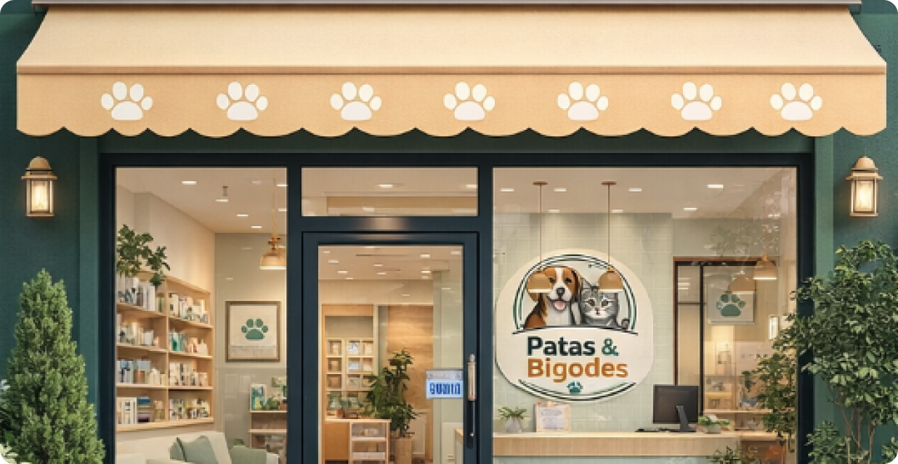
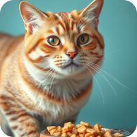
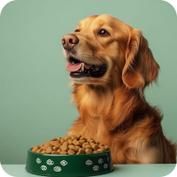
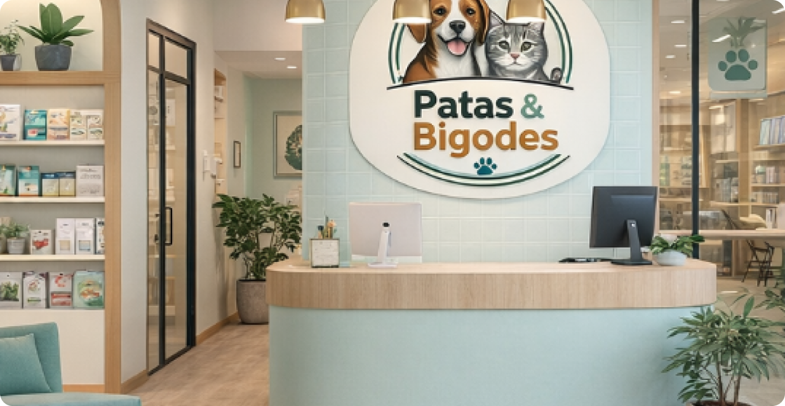

Patas & Bigodes
Patas & Bigodes é uma clínica veterinária moderna e
acolhedora, dedicada ao cuidado completo de cães e
gatos. Com uma equipe de profissionais especializados,
oferecemos atendimento clínico, cirúrgico e diagnóstico
com tecnologia avançada e muito carinho.
Nosso compromisso é garantir saúde, bem-estar e
qualidade de vida para os pets que fazem parte da sua
família.



Dr. Lucas – Clínico Geral
Responsável pelo atendimento clínico, o Dr. Lucas está na prevenção, diagnóstico e tratamento de diversas condições de saúde dos pets.
Responsável pelo atendimento clínico, o Dr. Lucas está na prevenção, diagnóstico e tratamento de diversas condições de saúde dos pets.
Dra. Ana – Cirurgiã
Especialista em procedimentos cirúrgicos, a Dra. Ana realiza intervenções com precisão e segurança, garantindo um bem-estar e recuperação tranquila dos pets.
Especialista em procedimentos cirúrgicos, a Dra. Ana realiza intervenções com precisão e segurança, garantindo um bem-estar e recuperação tranquila dos pets.
Dr. Rafael – Auxiliar de Veterinário
Ele ajuda na preparação de materiais, organização dos animais durante os atendimentos e exames, além de auxiliar nos cuidados básicos com os pets.
Ele ajuda na preparação de materiais, organização dos animais durante os atendimentos e exames, além de auxiliar nos cuidados básicos com os pets.